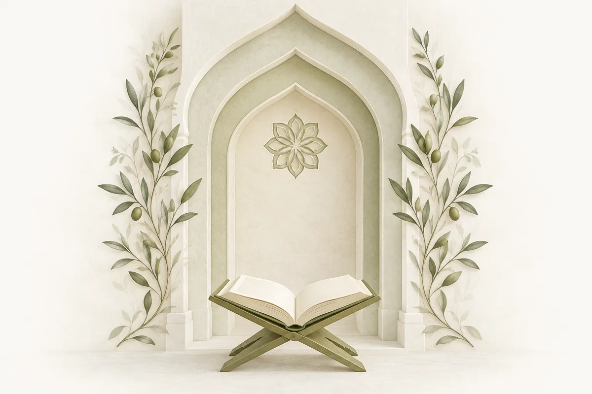

Биографии, труды и наследие великих ученых исламской уммы

Последние биографии
573 – 634Мекка
711 – 795Медина
642 – 728Медина
Поколение, которое увидело пророка ﷺ
Поколение, следовавшее за сподвижниками
Ученые следующего поколения
Ученые исламских правовых школ